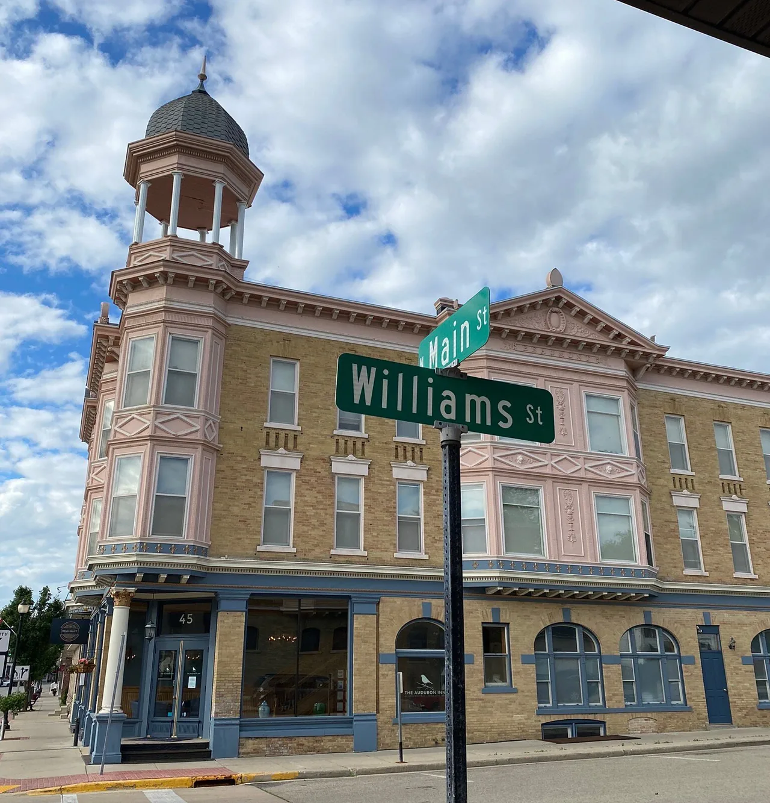
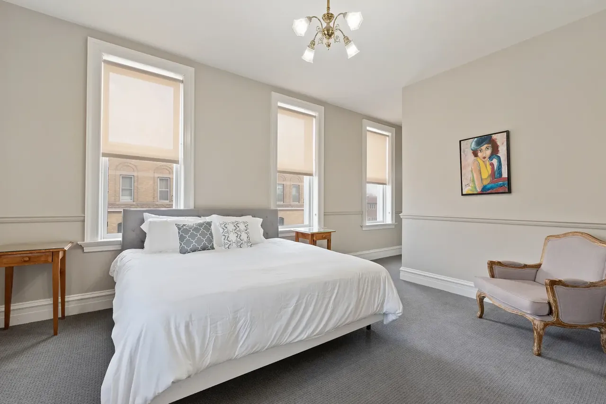
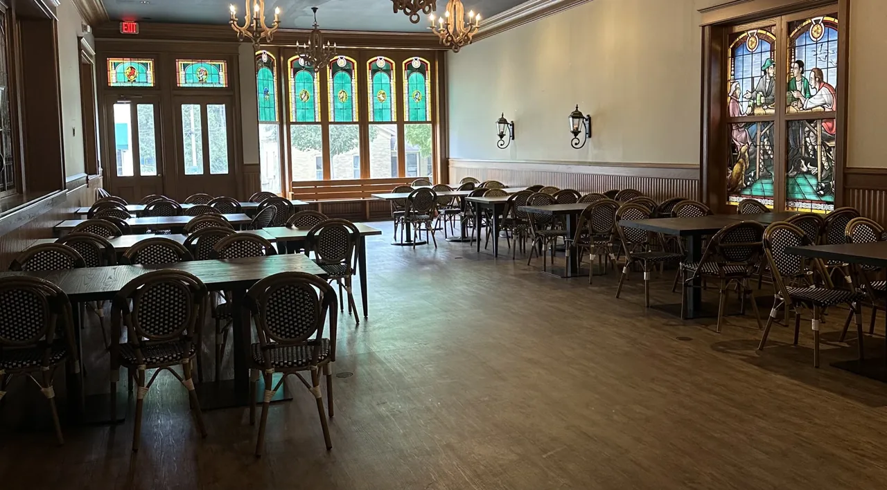
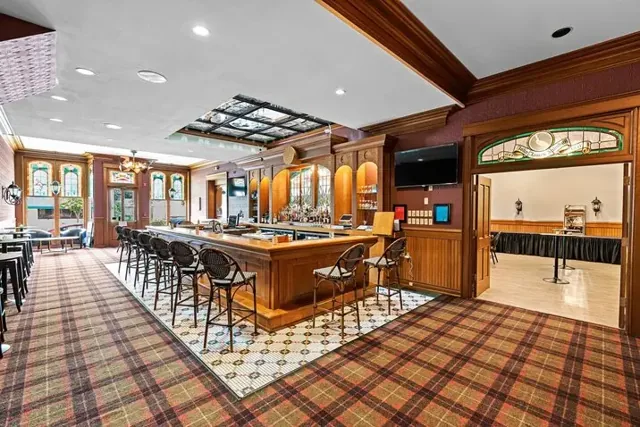
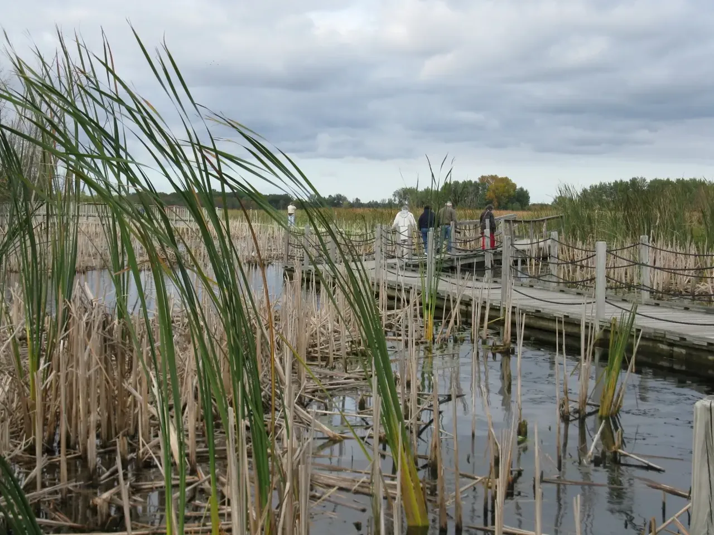

HISTORIC MAYVILLE, WISCONSIN · SINCE 1896
Historic stays.
Celebrations together.
Make yourself at home at the Audubon Inn.
Guest rooms, event space, and the Beaumont Bar,
with Horicon Marsh waiting nearby.
A HISTORIC ADDRESS. YOUR NEXT CHAPTER.
More time
with your people.
Bring family from near and far for a wedding weekend, settle in for a marsh escape, or meet friends for a drink. Our downtown inn brings a stay and a celebration together under one roof.
Meet the innCOME FOR A STAY. MAKE IT AN OCCASION.
Your kind of getaway.
Choose a room, plan a gathering, or find your place at the Beaumont.

Stay a little longer.
Compare room styles and check live rates.

Celebrate together.
Event-space rental, private bar service, and 9- or 18-room blocks.

Meet at the Beaumont.
A downtown setting for drinks and conversation.
ONE ADDRESS. A WEEKEND TOGETHER.
Room to gather.
A place to stay.
Our event space accommodates up to 150 people, with around 70 guests for a comfortable gathering. Keep your celebration and your guest rooms close with a 9- or 18-room block.

FOLLOW YOUR CURIOSITY
Open skies.
A slower weekend.
Make the inn your base for birdwatching, a scenic outing, and time outdoors around Horicon Marsh.
Plan a marsh weekendGET TO KNOW THE INN
A real place.
A stay with a story.
Explore guest photographs and reviews, then find the room or gathering that fits your visit.
Read guest reviews on Tripadvisor ↗When are check-in and checkout?
Are pets welcome?
How do I check room prices and availability?
A STAY WITH A STORY